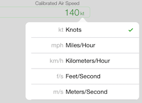

Switching Units
Each input and output field has it's own unit, which can be independently changed for each field.
Tapping on the unit displays a list of units you can choose from for that field. For example, to change the input units to use for calibrated air speed, you would tap on the unit, and select the new unit to use.
